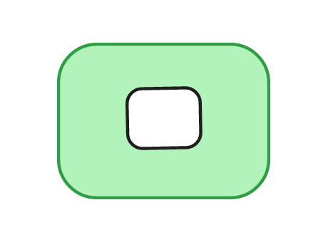
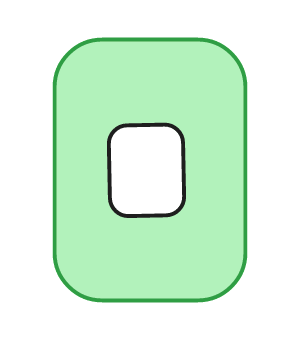

elaborate mitosis · two sequences
The Sequence & its v/h Version
One cell, growing elaborate and dividing, drawn straight from the Excalidraw figures. The colours name the order (the priority of the spine): green = 1, yellow / cream = 2, violet / purple = 3 — a higher order carries the lower ones as its inner shells. Each step is a mitotic division.

cells wider than high; split side-by-side

the diagonal transpose; split top-and-bottom
The two are the same sequence through the main diagonal: H is V transposed (the D1 backslash). The left was drawn out in full; the right existed only as far as the first five figures, so its later stages here are completed by transposing the left.